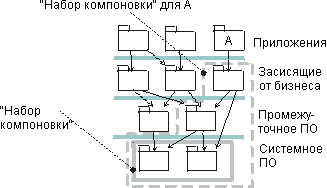

|
При работе с большими системами, в состав которых может входить до ста подсистем реализации, задача планирования
интеграции может вызвать затруднения.
Для облегчения процесса планирования интеграции и управления уровнем сложности рекомендуется уменьшить число
учитываемых факторов. Например, можно определить значимые наборы подсистем (наборы компоновки или блоки),
которые связаны друг с другом с точки зрения интеграции. В данном контексте связанными считаются подсистемы, которые
интегрируются вместе; их интеграция по отдельности не имеет смысла. Например, набор компоновки могут образовывать все
подсистемы нижних уровней, необходимые для работы конкретной подсистемы (они импортируются непосредственным или
косвенным образом).

Набор компоновки можно создать на самом низком уровне, если эти две подсистемы интегрируются вместе. В состав набора
компоновки входят все подсистемы, необходимые для компиляции и работы подсистемы A.
Обратите внимание, что наборы компоновки могут пересекаться. В ходе жизненного цикла проекта наборы компоновки и их
содержимое могут изменяться.
Основная цель создания наборов компоновки заключается в упрощении процесса планирования интеграции. Вместо отдельных
подсистем вы сможете рассматривать наборы подсистем.
|